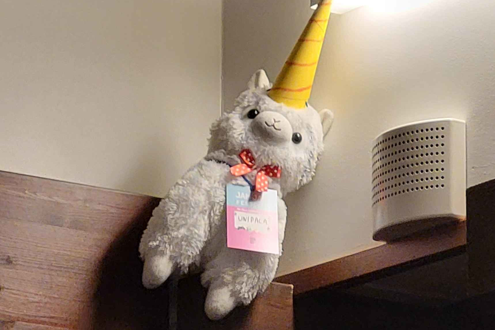

Jam Jam 2024
About the Jam Jam Festival 2024
At the Jam Jam Festival, the organizers of Game Jam’s and those interested in organizing get to meet each other in a relaxed atmosphere. During the event, you can participate in various workshops that every participant can hold.
The event was a great opportunity to network with industry professionals and other operators. In connection with grilling and sauna, you could discuss interesting topics and introduce yourself to others.
The event was a great opportunity to network with industry professionals and other operators. In connection with grilling and sauna, you could discuss interesting topics and introduce yourself to others.
My role:
You can also participate in Jam Jam Festivals as a volunteer. I participated in the event through this. The role of the volunteers included maintaining the cabins, cook the food and other individual tasks. The maintenance of the cottages included putting the dishes in the dishwasher, filling the cupboards, taking out the garbage and heating the sauna. Volunteers can also participate the workshops.
Volunteering was a great way to participate in the event. It was a pleasure to be useful, and while walking around you got to know the participants of the event better. New acquaintances were also made among the volunteers. Working with other volunteers was one of the funniest things of the event.
What have I learned:
Acting as a volunteer improved my communication and cooperation skills. Working with other volunteers went well and dividing tasks was easy. Since the event mainly used English, I was able to improve my English. Learning English is always useful because English is used a lot in the industry. It can also open up job opportunities in the future.
I definitely plan to continue participating in Jam Jam Festivals in the future, but I don't know if I will go as a volunteer or as a participant.
